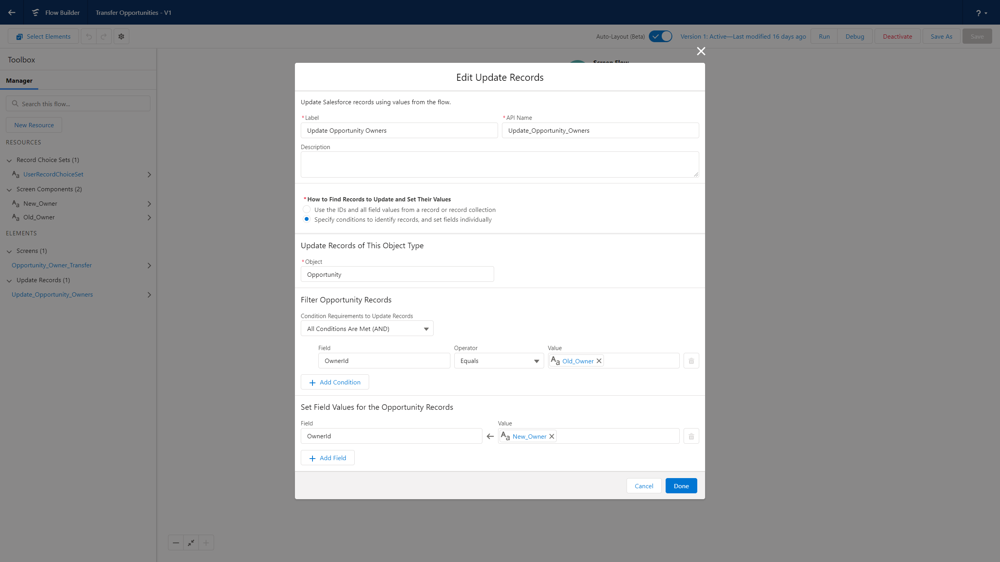

Automation in Salesforce
Salesforce acts as a central warehouse for a company's many business lines to interact with a shared data set. As a one-size-fits-all product it is important to be able to create custom solutions within Salesforce to accommodate a business's unique workflows. Salesforce's Flow Builder enables administrators to build autonomous functionality that would otherwise be unavailable in the base instance.
For this example I have created a Flow to mass transfer opportunities between reps, which would otherwise be restricted to a manual process. We begin by searching 'Flow' in the Setup tab and creating a 'Screen Flow'. We then build a 'New Resource' based on the User object and configure the picklist choices by Name.
Next we select 'Add Element' and choose 'Screen.' We add two picklists into the canvas to create our 'From Owner' and 'To Owner' drop down menus, making use of the 'UserRecordChoiceSet' resource we previously created.
Our last step is to add an 'Update Records' element to the Flow. We select 'Opportunity' as the update record type and utilize our newly created screen components 'New_Owner' and 'Old_Owner' as the filter and recipient field values respectively.
Our completed Flow is pictured below. We can now mass transfer opportunities among our reps despite it not being a standard function in Salesforce. For convenience we can also add our Flow to our Salesforce home page.